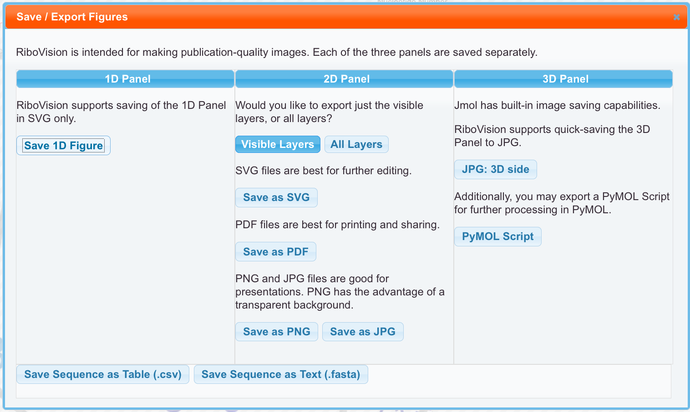

Sequences can now be saved to your computer. For now, these buttons are in the Save Figures Menu. We provide the sequences in two formats. There is the Table format, a CSV file, which contains the nucleotide numbers and the nucleotide letters. The whole sequence is provided. In addition, each of your selections are also provided in additional coloumns. These files can be opened in a spread sheet program, such as Excel, and furthur manipulated. Secondly, we provide FASTA format files. These don't inlcude the nucleotide numbers, only the nucleotide letters. These are simple text files, and can be manipulated in most bioinformatic programs, along with most text editors.
Save Data is an upcoming feature. It will allow you to download the actual data used in making your figure.